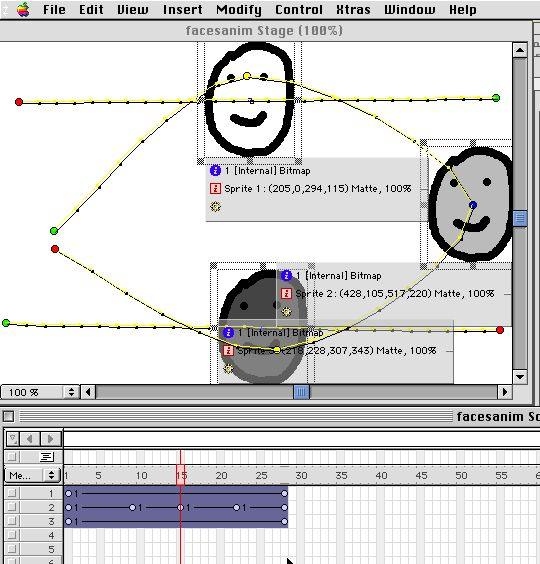

The Lingo Club at Eastmont Computing Center
Take a close look at the first Sprite in the Score and you should see a cirle at one end and a rectangle at the other end of the Sprite. The little circle is called a Keyframe, it controls how the Sprites moves.
You can move Sprite in two important ways:
1. When the entire Sprite is selected by clicking in the middle of the Sprite, dragging the Sprite on the Stage will move Sprite as a whole.
2. When a single Keyframe inside the Sprite is selected, only that frame's location for the Sprite is changed.
The vertical red line in the Score is called the Play Back Head, it shows current frame of your movie. You create a Keyframe on a Sprite by clicking in the middle of the Sprite and selecting Menu Insert->Keyframe. The Keyframe will appear on the frame in the Sprite marked by the Play Back Head.
Holding down the Option-Key and clicking on the Sprite will also create a Keyframe.
In this picture, the first Sprite has two Keyframes to make it move left to right, the second Sprite has five Keyframes to movie it in a circle.
